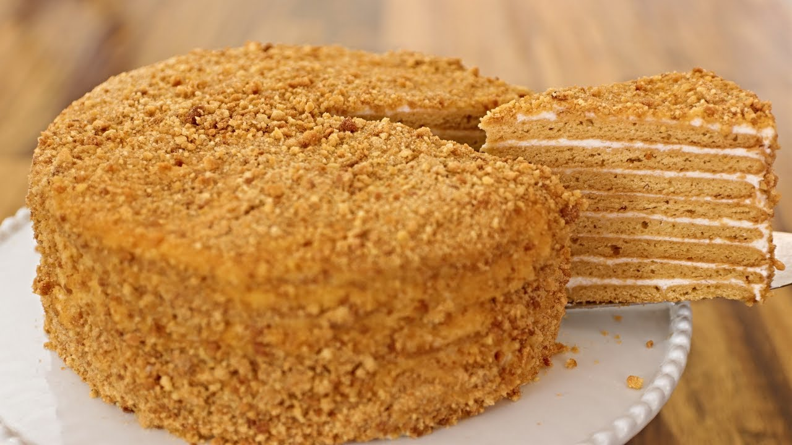

8 Layer Russian Honey Cake, Medovik, Recipe

Ingredients for Layers
- 1/4 cup honey
- 3/4 cup granulated sugar
- 2 tbsp unsalted butter
- 3 large eggs, room temperature, beaten with a fork
- 1 tsp baking soda
- 3 cups all-purpose flour (I use unbleached, organic)
Sour Cream Frosting Ingredients
- 32 oz sour cream
- 2 cups powdered sugar
- 1 cup heavy whipping cream
For the topping
225 g Fresh Berries (optional)
How to make Medovik
- Add 3/4 cup sugar, 1/4 cup honey and 2 Tbsp unsalted butter to a medium sauce pan and melt them together over medium/low heat, whisking occasionally until sugar is melted (5-7 mins). Don’t put them over high heat or they may scorch to the bottom.
- As soon as the sugar is dissolved, remove from heat and while it’s still hot, add in your beaten eggs in a slow steady stream while whisking vigorously until all of your eggs are incorporated (whisk constantly so you don’t end up with scrambled eggs).
- Whisk in the baking soda until no lumps remain, then fold in your 3 cups flour 1/2 cup at a time with a spatula until the dough reaches a clay consistency and doesn’t stick to your hands. Mine took exactly 3 cups flour (measured precisely, scraping off the top of the cup).
- Cut the dough into 8 equal pieces and move on to the next step right away (these roll out best when the dough is still warm).
- On a well-floured surface, roll each piece out into a thin 9″ circle (about 1/8″ thick). You can sprinkle the top with a little flour too to keep dough from sticking to your rolling pin.
Place a 9″ plate or base from a springform mold over your rolled dough and trace around it with a pizza cutter to get a perfect circle. Keep the scraps for later.
Transfer the dough to a large sheet of parchment paper and bake 2 at a time at 350˚F for 4-5 minutes or until golden. Transfer to a wire rack and let cool completely before stacking. Repeat with remaining layers
- Finally bake the scraps separated evenly on a re-used sheet of parchment.Once the scraps are baked, cooled and firm, you can crush them with a rolling pin or pulse them in a food processor until you have fine crumbs.
How to make the frosting
- Beat 1 cup heavy cream until fluffy and stiff peaks form (1-2 min on high speed).
- In a separate bowl, whisk together 32 oz sour cream with 2 cups powdered sugar. Fold the whipped cream into the sour cream and you have your frosting. Refrigerate until ready to use.
Assembling Your Cake
- Spread about 1/3 cup frosting on each cake layer (don’t skimp on it since the cake needs to absorb some of the cream to become ultra soft. Press the cake layers down gently as you go to keep the layers from having air gaps. Frost the top and sides with the remaining frosting
- Dust the top and sides with your breadcrumbs, then cover with plastic wrap and refrigerate overnight. This cake needs time to absorb some of the cream and soften, so be patient. It’s worth the wait!
Share this recipe with your friends. Good things are meant to be shared!